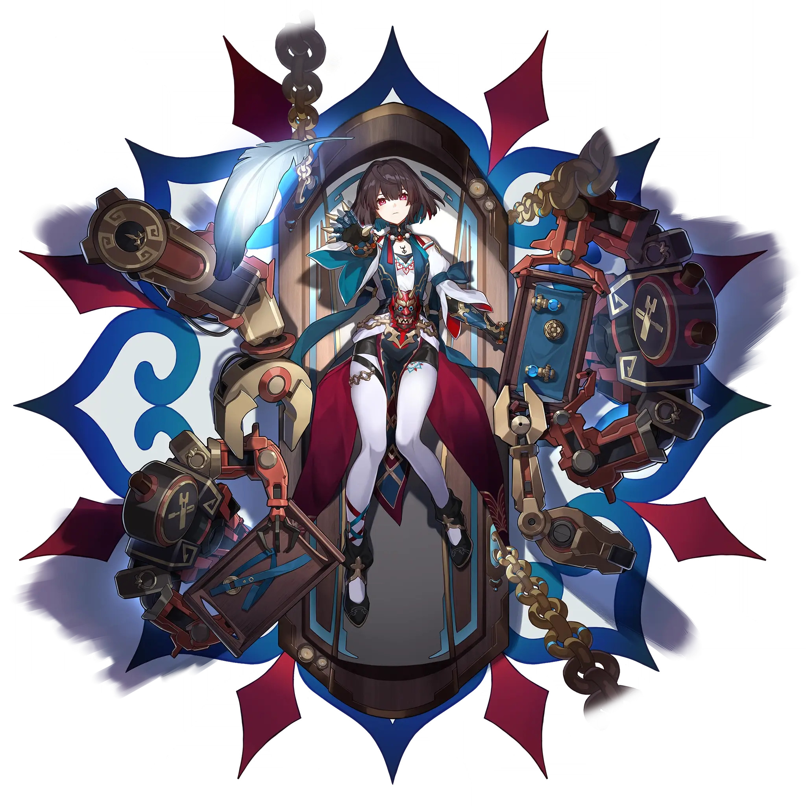

Xueyi
Best Xueyi build guide for Honkai Star Rail. See Xueyi's best Relics, Light Cones, teams, Eidolons, Trace priority, and how to play Xueyi.
🔍 Detail Skill
Semua skill aktif dan pasif beserta efeknya.
Deals #1[i]% of Xueyi's ATK as Quantum DMG to a single target enemy.
Deals Quantum DMG equal to #1[i]% of Xueyi's ATK to a single enemy, and Quantum DMG equal to #2[i]% of Xueyi's ATK to any adjacent enemies.
When Xueyi reduces enemy Toughness with attacks, Karma will be stacked. The more Toughness is reduced, the more stacks of Karma are added, up to #1[i] stacks. When Xueyi's allies reduce enemy Toughness with attacks, Xueyi gains #3[i] stacks of Karma. When Karma reaches the max number of stacks, consumes all current Karma stacks and immediately launches a follow-up attack against an enemy target, d
⚔ Light Cone Terbaik
Diurutkan dari yang paling kuat. Persentase menunjukkan performa relatif terhadap pilihan terbaik.
💎 Relic Set Terbaik
Set terbaik untuk karakter ini, diurutkan berdasarkan prioritas.
📊 Stat Utama
Stat yang dicari pada tiap slot.
👥 Tim yang Direkomendasikan
Karakter yang sering dipasangkan bersama Xueyi.
 Tingyun • Fugue
Tingyun • Fugue
 Trailblazer • Harmony
Trailblazer • Harmony
 Ruan Mei
Ruan Mei
 Sparkle
Sparkle
 The Dahlia
The Dahlia
🔗 Lanjutkan
Build ini dirangkum dari Prydwen Institute. Starwise tidak menghitung sendiri. Angka bisa berubah setelah patch atau karakter baru rilis.